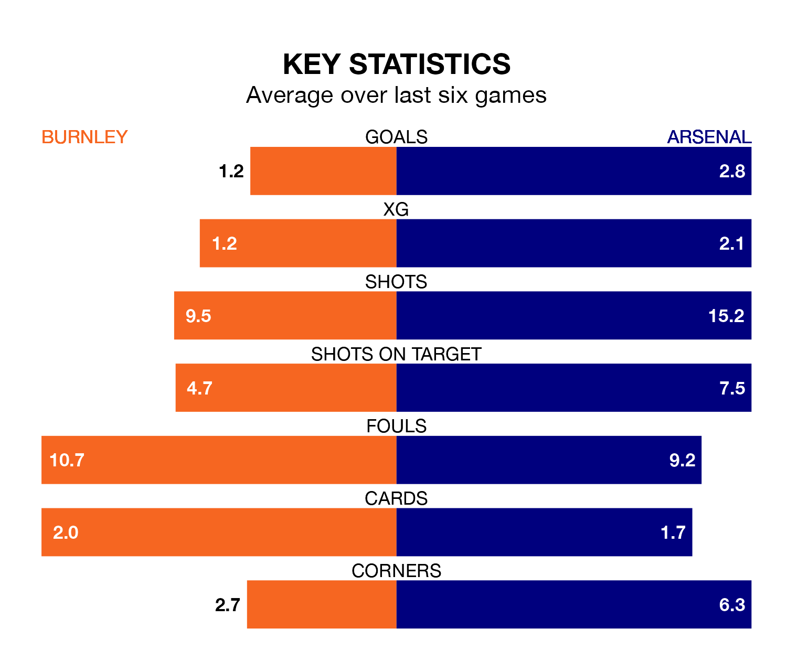

Mid-season relegation candidates Burnley face a challenge against high-flying Arsenal at Turf Moor on Saturday.
Burnley are 19th in the Premier League table, and have picked up three wins and four draws in their 24 games to date.
The Gunners, meanwhile, are second in the standings with 52 points, having won 16 and drawn four, and are two points behind table-toppers Liverpool.
With 53 goals in 24 games so far this season, Arsenal are the league's third-highest scorers with 2.2 goals per game. And they are conceding fewer than average, letting in 22 goals at a rate of 0.9 per game.
Burnley, meanwhile, are below average scorers, with 1.0 goal per game, compared to a league average of 1.6. They have conceded 2.1 goals per game.
The Clarets are in terrible form in the Premier League, with no wins and two draws from their last six games.
With four wins and two losses over that period, the Gunners's form is much better – they have taken 12 points from 18, compared to the home team's two.
In David Raya, the visitors can rely on one of the league's safest pair of hands. He has kept seven clean sheets in his 19 appearances this season, and only one other 'keeper – Everton's Jordan Pickford – has been able to prevent the opposition scoring on more occasions in the Premier League.
In Burnley's net, James Trafford has two clean sheets in 24 games. He has conceded a goal every 47 minutes, twice as often as the 95 minutes between goals for Raya Martin.
In the last 10 years, Burnley and Arsenal have played each other on 16 occasions. Burnley won one of them, Arsenal 12, and they drew three times.
On average, the Clarets scored 0.5 goals and the Gunners 1.8 in those matches.
Their last meeting was on November 11, when Arsenal won 3-1 at home.
Burnley's last match was on February 10, a 3-1 loss against Liverpool, with Dara O'Shea getting the goal for the Clarets.
Arsenal beat West Ham United 6-0 last time out, on Sunday, with Bukayo Saka (two), Declan Rice, Gabriel Magalhães, Leandro Trossard and William Saliba on the scoresheet.
Saturday's match will be refereed by Jarred Gillett, who has taken charge of 11 Premier League games so far this season, issuing two red cards and booking 53 players. He has awarded four penalties.
The last Burnley game Gillett refereed was a 1-0 away loss to Wolverhampton Wanderers on December 5. His last Arsenal match was their 1-0 loss away at Aston Villa on December 9.
Updated: 12:06 (UTC), 15/02/24